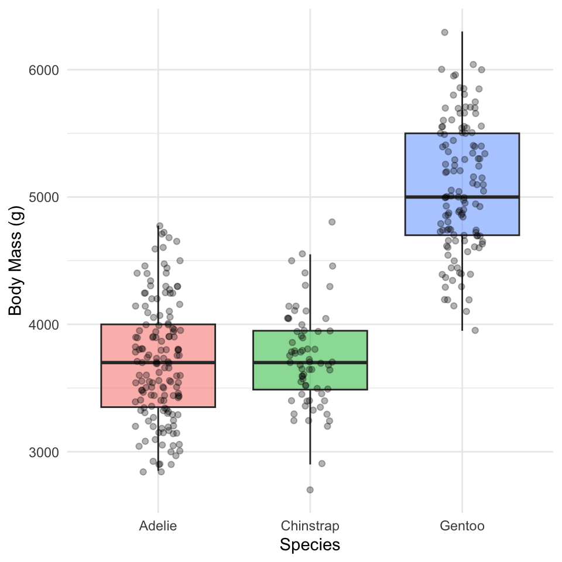
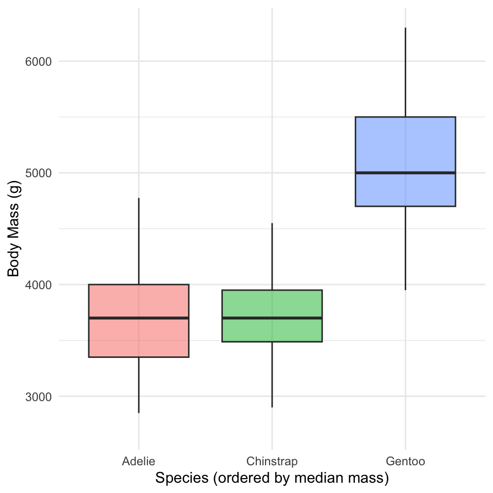
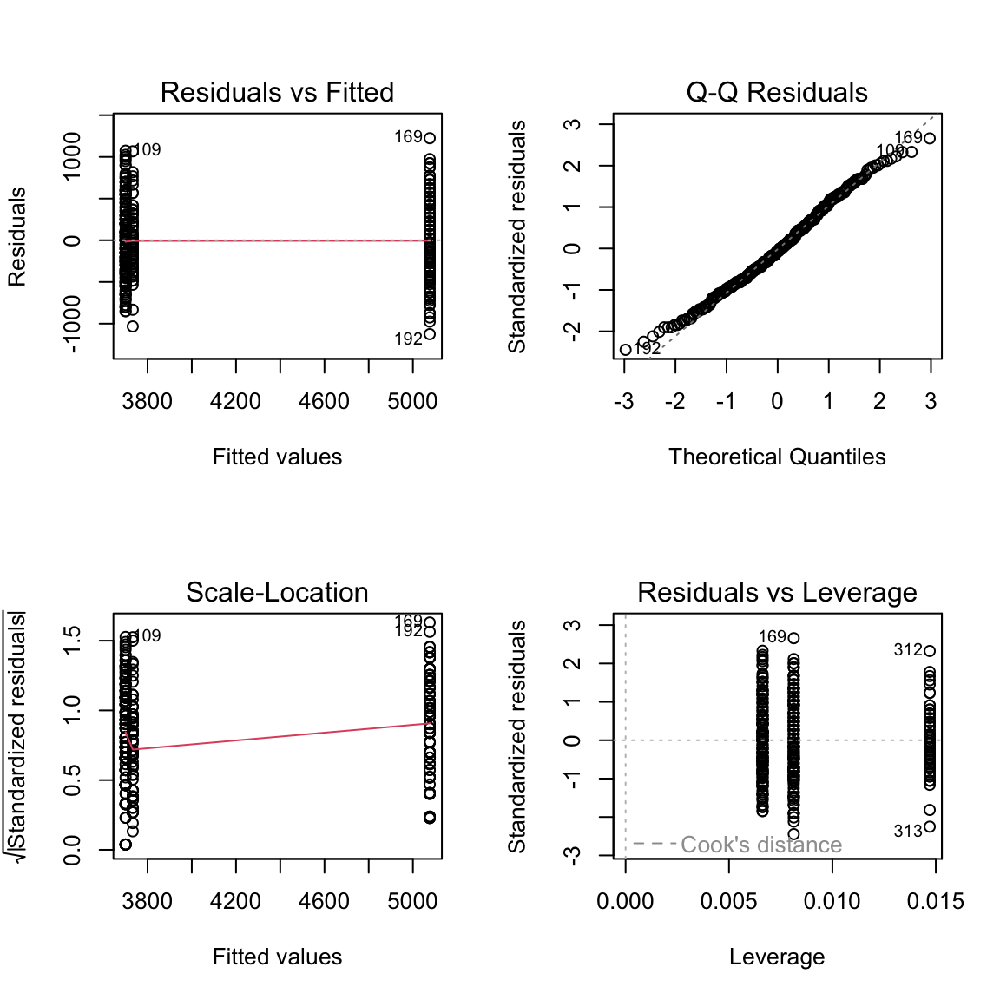

# Load packages at the top — always -------------------
library(tidyverse) # wrangling + ggplot2
library(palmerpenguins) # the penguins data
library(car) # Levene's test, Anova()
library(emmeans) # post-hoc pairwise testsLecture — One-Way ANOVA I: Setting Up the Test
Why not many t-tests, the F-statistic, ordering groups with factors, fitting the model, and checking assumptions
anova
factors
tidyverse
statistics
From two groups to many: why we don’t run many t-tests, how the F-statistic partitions variance, using factors to order groups for a readable plot and to set the ANOVA reference level, fitting a one-way ANOVA as a linear model, and checking its assumptions — normality of residuals and equal variance — on the Palmer penguins data.
Where we left off (Lectures 09–11)
- T-Tests I & II — comparing the means of two groups with Welch’s t-test
- Regression (Lecture 11) —
lm(Y ~ X)with a numeric predictor, checked withplot(model) - Both of those are, underneath, the same tool: a linear model
Note
✅ Transition
The t-test compared two groups. But biology is full of three-or-more group questions — three species, four sites, five treatments. Today’s twist: it’s still lm(Y ~ X) — just with a categorical X instead of a numeric one. That’s one-way ANOVA.
Goals for today
- Understand why we don’t just run many t-tests
- See how the F-statistic compares between- vs within-group variance
- State ANOVA hypotheses (H₀: all means equal)
- Use factors to order groups for a readable plot and set the reference level
- Fit the model with
lm() - Check assumptions — normality of residuals, equal variance
Tools today:
palmerpenguins,tidyverse(includesforcats)car— Levene’s test
Textbook:
- 📖 Whitlock & Schluter, Ch. 15 — ANOVA
- 📖 R4DS Ch. 16 — Factors
- 📖 R4DS Ch. 9 — Layers
Naming: models → _model, plots → _plot
How to Use These Slides — Predict · Type · Run
This lecture runs in two short chunks. After each chunk you switch to the activity and type the code yourself.
For every code block, do three things:
- Predict — before it runs, say what you think the output will be
- Type it out by hand — do not copy-paste
- Run it and compare to your prediction
Note
✅ Why bother? (the evidence)
- With three groups instead of two, it is tempting to just read off which box in the plot looks tallest. Committing to a prediction about the F-statistic before you see it forces you to reason about between- vs. within-group variance instead of eyeballing a boxplot.
- Typing
type = "II"yourself inAnova()is what makes you notice it’s there — paste the line and you’ll never ask why it matters for unbalanced groups. - Practicing each assumption check right after it’s introduced keeps normality-of-residuals and Levene’s test tied to this penguin model instead of turning into two more disconnected rules to memorize.
🧩 Chunk 1 of 2 · Why ANOVA & the F-Statistic
We will cover: why not many t-tests, what ANOVA asks, how F partitions variance, and a first look at the penguin data.
Tip
🖐 After this chunk: Activity Parts 1–3 (load the penguins, explore, state hypotheses).
Why Not Just Run Many t-Tests?
With 3 groups you’d need 3 t-tests (A–B, A–C, B–C). With 4 groups, 6 tests.
Every test at α = 0.05 has a 5% chance of a false positive. Run several and those risks stack up:
- 3 tests → ~14% chance of at least one false positive
- 6 tests → ~26%
ANOVA asks the question once, holding the overall error rate at 0.05.
Important
The multiple-comparisons problem
More tests = more chances to be fooled by noise. ANOVA is the single, honest test for “do any of these groups differ?”
📖 W&S §15.1 — why a single test
What One-Way ANOVA Asks
One numeric response (Y) across the levels of one categorical predictor (X).
| Hypothesis | |
|---|---|
| H₀ — null | all group means are equal (\(\mu_1 = \mu_2 = \mu_3\)) |
| Hₐ — alternate | at least one group mean differs |
Note what Hₐ does not say: it does not tell you which group differs — that comes later, from the post-hoc test.
Our question today:
Do the three penguin species differ in body mass?
- Y =
body_mass_g - X =
species(Adelie, Chinstrap, Gentoo)
The F-Statistic — Between vs. Within
\[F = \frac{\text{variance BETWEEN groups}}{\text{variance WITHIN groups}}\]
- Between — how far apart the group means are
- Within — how much the individuals scatter inside each group
Big F → the groups are far apart relative to their internal noise → small p-value.
F ≈ 1 → the spread between groups is no bigger than the spread within them → no real difference.
Note
✅ Key idea
ANOVA is a signal-to-noise ratio. The “signal” is the gap between group means; the “noise” is the within-group scatter.
📖 W&S §15.1–15.2
Meet the Data — Palmer Penguins
# Drop rows missing mass or species -------------------
penguins_df <- penguins %>%
drop_na(body_mass_g, species)
penguins_df %>% count(species)# A tibble: 3 × 2
species n
<fct> <int>
1 Adelie 151
2 Chinstrap 68
3 Gentoo 123Three species, one lab: body mass (g) of penguins at Palmer Station, Antarctica.
drop_na()removes rows with missing masscount(species)shows the sample size per group
Important
The groups are unbalanced (different n per species) — that matters when we pick our ANOVA type later.
Explore First — Boxplot by Species
Note
🔮 Predict first: Before the plot renders — do you expect all three species to differ, or just one? Which species do you think is heaviest?
mass_box_plot <- penguins_df %>%
ggplot(aes(x = species, y = body_mass_g, fill = species)) +
geom_boxplot(alpha = 0.5, outlier.shape = NA) +
geom_point(
position = position_jitter(width = 0.15, seed = 42),
alpha = 0.3, size = 1.5
) +
labs(x = "Species", y = "Body Mass (g)") +
theme_minimal() +
theme(legend.position = "none")
mass_box_plot
Always plot before you test.
- The picture usually tells the story before the p-value confirms it
- Look for separation between boxes and roughly similar spread
- But notice the order: Adelie, Chinstrap, Gentoo — that’s alphabetical, not by mass
📖 R4DS §9 — Layers
species Is a Factor — and Factors Have an Order
class(penguins_df$species) # "factor"[1] "factor"levels(penguins_df$species) # the stored order[1] "Adelie" "Chinstrap" "Gentoo" - A factor is a categorical column with a fixed, ordered set of levels
ggplot(andlm) draw groups in level order- The default level order is alphabetical — almost never the order you want
Note
✅ Key idea
Alphabetical order hides the pattern. Ordering the groups by the thing you are testing — here, body mass — makes the boxplot tell the story at a glance.
forcats (the fct_* family) ships with library(tidyverse).
Order the Boxplot by Body Mass — fct_reorder()
penguins_df %>%
mutate(species = fct_reorder(species, body_mass_g, .fun = median)) %>%
ggplot(aes(x = species, y = body_mass_g, fill = species)) +
geom_boxplot(alpha = 0.5, outlier.shape = NA) +
labs(x = "Species (ordered by median mass)", y = "Body Mass (g)") +
theme_minimal() +
theme(legend.position = "none")
fct_reorder(f, x, .fun = median)— reorder factorfby a summary ofx- Do it inside
mutate(), then plot the result - One line; the plot now reads lightest → heaviest
Tip
The full forcats family — rename levels, merge them, lump rare ones — is in Common Code 15 · Factors. Today we only need ordering and, next, the reference level.
🛑 Pause — Do Activity Parts 1–4 Now
Load the penguins, plot body mass by species, reorder the boxplot with fct_reorder(), and write your hypotheses. Predict which species differ before you run anything.
🧩 Chunk 2 of 2 · Fit the Model & Check Assumptions
We will cover: fitting the model, then checking normality of the residuals and equal variance across groups.
Tip
🖐 After this chunk: Activity Parts 5–8 (fit, set the reference level, QQ + Shapiro on residuals, Levene’s test).
Fit the Model
# ANOVA is a linear model with a categorical X ---------
mass_model <- lm(body_mass_g ~ species, data = penguins_df)lm(Y ~ X)— the same syntax as regression (Lecture 11)- When
Xis categorical, that linear model is a one-way ANOVA - We check assumptions on this model before reading any p-value
Note
✅ Key idea
lm(body_mass_g ~ species) is the exact same function call you used for a numeric predictor in Lecture 11 — only species is categorical this time. R handles the encoding automatically; you don’t write anything differently to get an ANOVA instead of a regression.
📖 W&S §15.2
Which Group Is the Baseline? — fct_relevel()
# The (Intercept) is the FIRST level = Adelie ---------
coef(mass_model) (Intercept) speciesChinstrap speciesGentoo
3700.66225 32.42598 1375.35401 # Make Gentoo the reference instead --------------------
penguins_relevel <- penguins_df %>%
mutate(species = fct_relevel(species, "Gentoo"))
coef(lm(body_mass_g ~ species, data = penguins_relevel)) (Intercept) speciesAdelie speciesChinstrap
5076.016 -1375.354 -1342.928 lmpicks the first factor level as the baseline; every coefficient is a difference from that groupfct_relevel(species, "Gentoo")moves Gentoo to the front → coefficients are now differences from Gentoo
Important
Releveling changes which comparisons the coefficients show. It does not change the overall F or p-value — the ANOVA question (“do any means differ?”) is the same no matter which group you call the baseline.
Assumption 1 — Normality of the Residuals
Note
🔮 Predict first: plot(mass_model) gives the same four panels you saw in the regression lecture. With ~340 penguins instead of 118 near-perfect paper squares, do you expect the Normal Q-Q panel to track the line as tightly?
# Same plot(model) diagnostics as Lecture 11's regression
par(mfrow = c(2, 2))
plot(mass_model)
shapiro.test(residuals(mass_model))
Shapiro-Wilk normality test
data: residuals(mass_model)
W = 0.99166, p-value = 0.05118- Check normality of the residuals, not the raw masses
- Panel 2 (Normal Q-Q) is the main visual tool; Shapiro-Wilk is a formal companion
- Panels 1 & 3 double-check equal variance — the same job Levene’s does next, from a different angle
Important
Large-sample caution: with ~340 birds, Shapiro-Wilk flags tiny departures as “significant.” Trust the Q-Q panel — if points track the line, you’re fine.
Assumption 2 — Equal Variance (Levene’s Test)
Note
🔮 Predict first: Look back at the boxplot spreads. Predict — will Levene’s test call the variances equal (p > 0.05) or unequal?
# Levene's test — H0: all groups have equal variance --
leveneTest(body_mass_g ~ species, data = penguins_df)Levene's Test for Homogeneity of Variance (center = median)
Df F value Pr(>F)
group 2 5.1203 0.006445 **
339
---
Signif. codes: 0 '***' 0.001 '**' 0.01 '*' 0.05 '.' 0.1 ' ' 1- p > 0.05 → variances similar → classic ANOVA is fine
- p < 0.05 → variances differ → use Welch’s ANOVA:
oneway.test(body_mass_g ~ species,
data = penguins_df,
var.equal = FALSE)Same spirit as Welch’s t-test — robust when spreads differ.
🛑 Pause — Do Activity Parts 5–8 Now
Fit lm(body_mass_g ~ species), set the reference level with fct_relevel(), check the residual QQ plot + Shapiro, and run Levene’s test. Predict each result before you run it.
What We Learned Today
Concepts:
- Many t-tests inflate the false-positive rate — ANOVA asks once
- F = between-group ÷ within-group variance (signal ÷ noise)
- A factor’s level order sets the plot order and the model baseline
- ANOVA is a linear model with a categorical predictor — same
lm()as regression - Assumptions: normal residuals, equal variance (Levene)
R skills:
fct_reorder()to order groups by the response;fct_relevel()to set the baselinelm(Y ~ group)plot(model)diagnostics,shapiro.test(residuals())leveneTest()- rest of the
fct_*family → Common Code 15 · Factors
References:
- 📖 W&S Ch. 15 — ANOVA
- 📖 R4DS Ch. 16 — Factors
Up next — Lecture 14:
- Assumptions are checked — now we run the test
aov()andcar::Anova(), thenemmeanspost-hoc to find which species differ, and how to report it